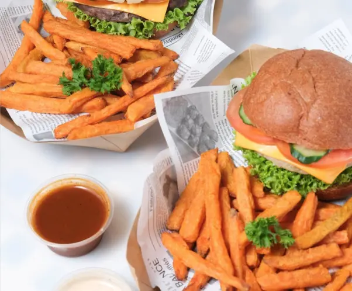

- 
About the Site
The star of the menu is undoubtedly the "Delicious Burger", an irresistible combination of juicy meat, melted cheese, crispy bacon, and a special secret sauce. For vegetarians, the "Veggie Delight" option is equally impressive, featuring a seasoned chickpea patty and a selection of fresh vegetables that even the most dedicated carnivores will love.
But Delicious Burger isn't just about burgers. The restaurant also offers a variety of sides that perfectly complement the main dishes. The rosemary and sea salt rustic fries are an absolute hit, as are the crispy onion rings. For those looking for something different, the cheese balls with pepper jelly are a pleasant surprise.
The drinks are also a highlight. In addition to traditional options like sodas and natural juices, Delicious Burger boasts a selection of craft beers that pair perfectly with the menu items. For milkshake lovers, the "Supreme Milkshake" is a true temptation, featuring vanilla ice cream, chocolate syrup, and whipped cream.
The ambiance at Delicious Burger is another strong point. With a style that blends rustic and industrial elements, the space is decorated with wooden furniture, metal light fixtures, and plants that add a touch of freshness. The carefully selected soundtrack varies between classic rock and jazz, creating a pleasant and relaxed atmosphere.
Sustainability is also evident at Delicious Burger. The owners invest in eco-friendly packaging and reducing plastic use, as well as prioritizing local suppliers and organic ingredients whenever possible. This sustainable philosophy attracts a conscious and engaged audience that values companies committed to the environment.
The team at Delicious Burger is trained to offer excellent service. Friendly and knowledgeable, the staff are always ready to suggest combinations, explain dishes, and ensure each customer has a memorable experience. The open kitchen allows customers to watch the food preparation, reinforcing transparency and service quality.
Themed events and special promotions are frequent at Delicious Burger. From karaoke nights to tastings of new dishes, the schedule is always full of activities that attract both regulars and new visitors. The restaurant's social media is regularly updated, keeping everyone informed about the latest news and events.
In summary, Delicious Burger is much more than a place to eat burgers. It is a space where friends meet, families celebrate, and everyone leaves satisfied. With an unwavering commitment to quality, flavor, and sustainability, Delicious Burger continues to win hearts and palates, establishing itself as a reference in the city's gastronomic scene.